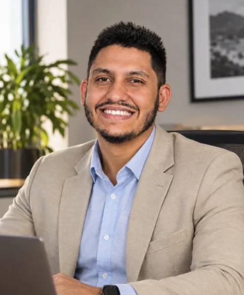
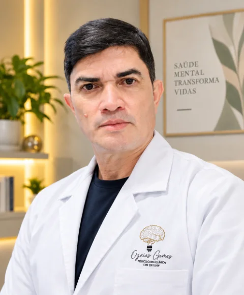
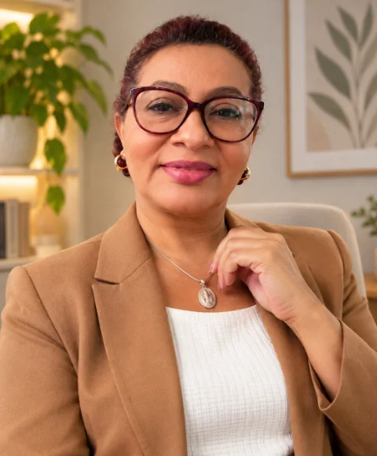

Psicoterapia Infantil
Suporte emocional e comportamental para crianças, com orientação integrada à família em todas as etapas do processo.
Cuidar da mente também é uma forma de florescer. Um espaço de escuta ética, cuidado individualizado e transformação genuína.
A identidade dos nossos espaços é inspirada em referências linguísticas e culturais de povos indígenas de tradição Tupi-Guarani, valorizando conceitos como sabedoria, crescimento, renovação e desenvolvimento.
A Arandu nasceu com o propósito de oferecer cuidado psicológico acessível, humanizado e baseado em evidências. Aqui, cada atendimento é construído com base na história única de quem chega — sem atalhos, sem protocolos genéricos.
Integramos escuta clínica, ciência psicológica e estratégias individualizadas para crianças, adolescentes e adultos. O compromisso é com o desenvolvimento real e duradouro de cada pessoa que confia a nós o seu processo.
Cada modalidade é conduzida com rigor técnico e sensibilidade clínica, respeitando o tempo e as necessidades de cada pessoa.
Suporte emocional e comportamental para crianças, com orientação integrada à família em todas as etapas do processo.
Terapia individual voltada para questões emocionais, relacionais e existenciais — com escuta atenta e sem julgamentos.
Atendimento especializado em autismo e condições do neurodesenvolvimento, com abordagem baseada em evidências.
Processo estruturado de avaliação com uso de instrumentos validados, gerando relatório técnico fundamentado.
Suporte às famílias no desenvolvimento de estratégias saudáveis para a criação e o relacionamento com os filhos.
Sessões com taxa acessível para garantir que o cuidado psicológico chegue a quem mais precisa.
Na Arandu, acreditamos que o ambiente também faz parte da experiência de cuidado. Por isso, cada sala possui uma identidade própria, inspirada na natureza e em diferentes dimensões do desenvolvimento humano, criando espaços acolhedores para crianças, adolescentes e adultos.
“Cada pessoa possui sua própria história. O cuidado começa quando ela encontra um espaço seguro para ser escutada.”David Azulay de Azevedo — Psicólogo

CRP 20/10.762Atuação voltada ao atendimento infantil e adulto, com ênfase em saúde mental, desenvolvimento humano e transtornos do neurodesenvolvimento, especialmente o Transtorno do Espectro Autista (TEA).
Ver perfil completoDavid Azulay de Azevedo é Psicólogo Clínico e Comportamental, com atuação voltada ao atendimento infantil e adulto, especialmente nas áreas de saúde mental, desenvolvimento humano e transtornos do neurodesenvolvimento, com ênfase no Transtorno do Espectro Autista (TEA).
Sua prática clínica integra a Terapia Cognitivo-Comportamental (TCC) e a Terapia de Aceitação e Compromisso (ACT), abordagens que favorecem a compreensão de pensamentos, emoções e comportamentos, além do desenvolvimento de estratégias para lidar de forma mais consciente e funcional com as experiências da vida.
Atua no acompanhamento de demandas relacionadas à ansiedade, depressão, questões familiares, luto, desenvolvimento emocional e neurodesenvolvimento, construindo cada processo terapêutico de forma individualizada, respeitando a história, as necessidades e o momento de cada paciente.
É especialista em Psicopedagogia Clínica e Institucional e em Tutoria para Educação a Distância (EAD), além de possuir formação continuada em Análise do Comportamento Aplicada (ABA), com pós-graduação em Intervenção ABA para Autismo e Deficiência Intelectual pelo CBI of Miami e capacitação como aplicador ABA por Regina Bérgamo.
Também atua como Supervisor Clínico e possui experiência na formação de estudantes e profissionais da Psicologia, tendo exercido funções como docente de graduação e pós-graduação, Coordenador Adjunto de Curso de Psicologia e Responsável Técnico de Clínica-Escola.
Além da atuação clínica, desenvolve palestras, capacitações e ações de orientação em escolas, empresas e comunidades, abordando temas relacionados à saúde mental, desenvolvimento infantil, neurodesenvolvimento, educação emocional e inclusão.
À frente da Arandu Clínica de Psicologia, como Responsável Técnico, dedica-se à construção de um espaço de cuidado psicológico pautado pela ética, acolhimento, ciência e respeito à singularidade humana, buscando favorecer autonomia, autoconhecimento e qualidade de vida.

CRP 20/13426Atuação fundamentada na Neuropsicologia, na Terapia Cognitivo-Comportamental (TCC) e na Terapia do Esquema, com foco no autoconhecimento e no equilíbrio emocional.
Ver perfil completoOzaías Gomes Pereira é Psicólogo Clínico, com atuação fundamentada na Neuropsicologia, na Terapia Cognitivo-Comportamental (TCC) e na Terapia do Esquema.
Sua prática é orientada por uma compreensão individualizada de cada pessoa, considerando a interação entre cognições, emoções, comportamentos e experiências de vida. O processo terapêutico busca favorecer o autoconhecimento, a compreensão dos padrões emocionais e comportamentais e o desenvolvimento de recursos para lidar de forma mais saudável com os desafios cotidianos.
Na Arandu Clínica de Psicologia, oferece um espaço de escuta, acolhimento e cuidado, respeitando a singularidade de cada história e construindo, junto ao paciente, possibilidades para uma vida com maior equilíbrio e qualidade de vida.

CRP 20/07519Atuação pautada na escuta qualificada e no acolhimento, utilizando a Terapia Cognitivo-Comportamental (TCC) no acompanhamento de questões emocionais e familiares.
Ver perfil completoCom uma atuação pautada na escuta qualificada, no acolhimento e na compreensão integral do indivíduo, Filonila dos Santos Teixeira atua como Psicóloga Clínica, utilizando a Terapia Cognitivo-Comportamental (TCC) como abordagem em seu trabalho.
Sua prática contempla o acompanhamento de pessoas que vivenciam desafios relacionados à ansiedade, depressão, relacionamentos e questões familiares, oferecendo um espaço seguro para compreender emoções, pensamentos e comportamentos e construir novas possibilidades diante das experiências vividas.
Seu trabalho valoriza a singularidade de cada pessoa e a construção de um processo terapêutico individualizado, respeitando o tempo, a história e as necessidades de cada paciente.
Na Arandu Clínica de Psicologia, acredita na psicoterapia como um espaço de cuidado, autoconhecimento e transformação, favorecendo o desenvolvimento de recursos emocionais para uma vida com mais equilíbrio, consciência e qualidade de vida.